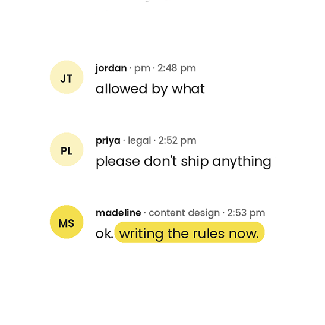
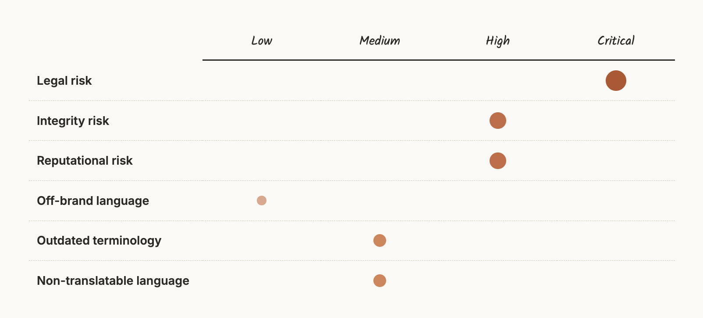
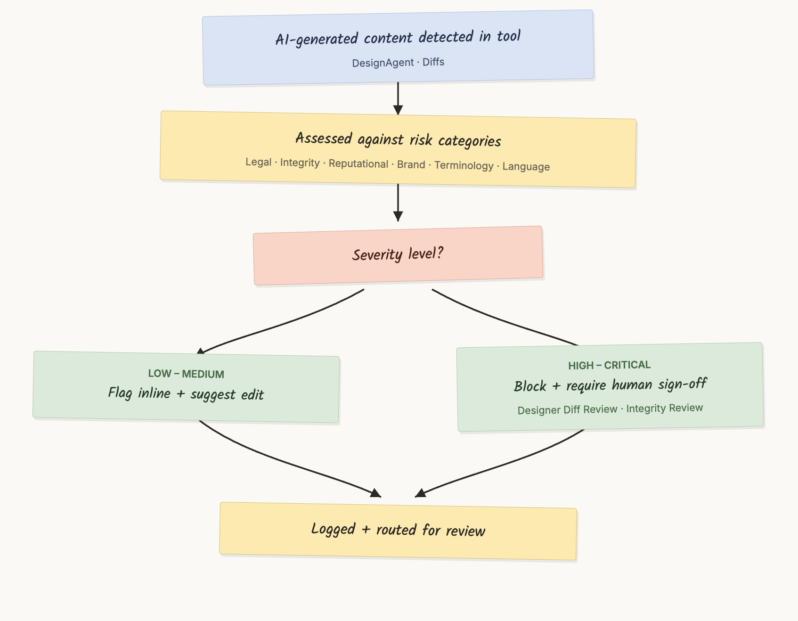

Meta · 2024 · Senior Content Designer & UX Strategist

By 2024, designers, engineers and product managers all wanted to use AI to speed up and scale their work. For a company servicing over a billion people, we had to do this responsibly, in a world with no established norms (yet).
Risk for AI-generated content had never been defined, so there was nothing to measure against. Teams across Meta also had their own interpretations and tolerance for risk. Designers wanted to use AI responsibly, but couldn’t assess risk they had no framework for. The tools were already in use, so the rules had to meet people where they were.
Write the rules for AI, before there were any.
I led a core working group, drawing input from designers across the company with different teams and expertise. The work spanned across:
Legal risk, integrity risk, reputational risk, off-brand language, outdated terminology, non-translatable language, and more.
Every category got a risk level, so teams could better understand if they were working in a high-risk territory.
If risky content was detected through AI-generated tools, we determined how to communicate to the user that it could be harmful, and when human sign-off should be encouraged or required.
Sample 1
Mapping each risk category against its severity level, from low to critical.

Illustrative mapping
Sample 2
How severity determined whether content was flagged inline or blocked for human sign-off.

Illustrative mapping
Note: The framework itself is internal to Meta, so this case study shows the thinking rather than the artifacts.
In a climate where AI is pushing everything faster than it’s ever gone, there was a strong appetite to make sure we were doing this right.
However it became clear that governance works best if it doesn’t get in the way. This meant the framework couldn’t be another process to slow people down; it had to catch the risk inside the tools they were already using.